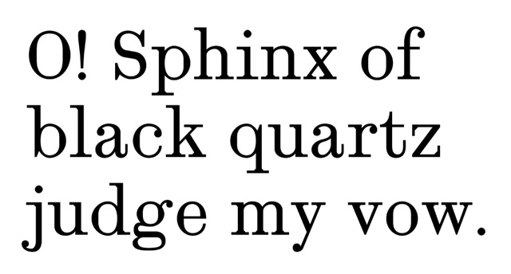
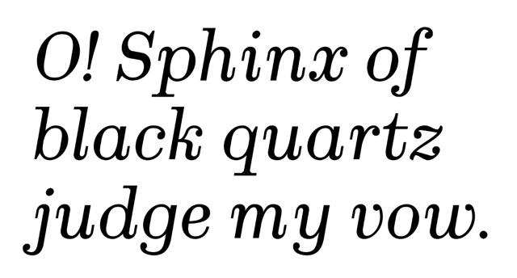

2025-02-06
 
Scotch is meant for academic publishing. It takes inspiration from the eponymous Scotch type classification, but adds wedge brackets in order to be more versatile for different environments.